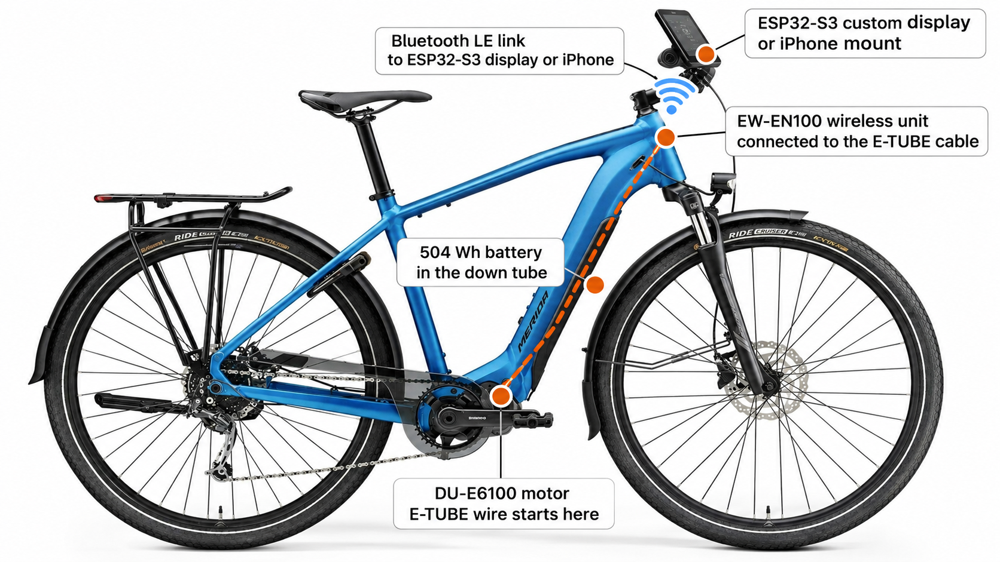
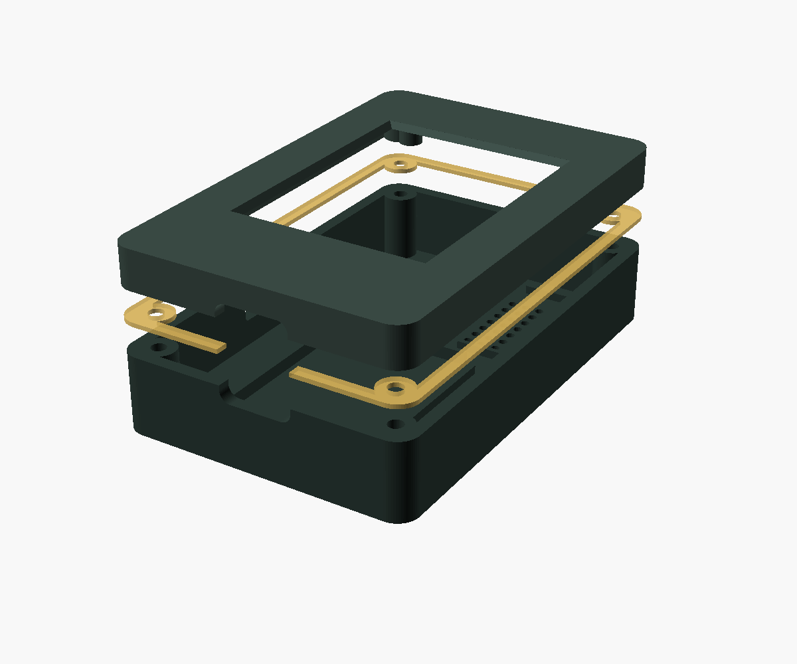

Borghini's dashboard
A handlebar touchscreen that reads live ride data from a Shimano STEPS e-bike over Bluetooth, with no wires to the bike. It also does a GPS track, heart rate, an iPhone music remote, internet radio and MP3s.

Why Bluetooth? Shimano's EW-EN100 wireless unit already sends the bike's live data over Bluetooth LE: speed, assist mode, battery, range, trip and lights. We decoded it, so the dashboard just listens. There's no cable to splice, no custom circuit board, and nothing to break on the bike.
Built for Borghini, a blue Merida eSpresso 400 S EQ. It's named after Lamborghini, because blue is 蓝 lán (lam in Cantonese).
The ESP32 only subscribes to notifications. It never writes to the bike, so it can't change assist, settings, firmware or the 25 km/h limit. If it crashes, the bike rides exactly as normal.
Hobby project, not affiliated with or endorsed by Shimano. The protocol notes come from captures of one bike (EN100 firmware 4.6.0.0). Other units and firmware may differ.
Chapter 02What it does
Ride data
Speed, assist mode (OFF / ECO / NORMAL / HIGH), battery, range for the current mode, trip and lights, from the EW-EN100. Cadence and max/average speed are decoded too.
Heart rate
From any Bluetooth heart-rate sender: a chest strap, a watch broadcasting HR, or an Apple Watch through the HeartCast app.
iPhone music remote
Pairs as E-TUBE Tap. Shows what's playing in Spotify or Music and controls play, skip and volume (Apple Media Service).
Internet radio
Nine built-in stations over Wi-Fi (Hong Kong, Beijing, Singapore, Australia, UK), through the board's speaker, with a volume boost.
MP3 player
Every .mp3 on the microSD card, with shuffle and repeat.
Map trail
Draws the line you've ridden, with a scale bar. The code is ready. It runs a simulated route until a GPS module is fitted (Phase 9).
Chapter 03How it works
The ESP32-S3 plays two Bluetooth roles at once. As a central, it connects out to the bike and to a heart-rate sender. As a peripheral, it lets your iPhone connect in for music. One shared scan finds both the bike and the heart-rate sender.
The one rule: the EN100 talks to one device at a time
When Shimano Ride on your phone is connected to the EN100, the EN100 stops advertising and the dashboard can't see it. Ride reconnects quietly in the background, so force-quit Shimano Ride when you ride with the dashboard. The iPhone's own link to the dashboard (for music) is separate and stays connected.
Chapter 04Parts
| Part | What for | Approx. AUD |
|---|---|---|
| Shimano EW-EN100 | The bike's Bluetooth unit. Many STEPS bikes already have one. It takes the display's place, so a bike can't have both an EN100 and an SC display | ~78 |
| LCDwiki ES3C28P | ESP32-S3 (16 MB flash, 8 MB PSRAM), 2.8" IPS touchscreen, ES8311 audio + speaker, microSD slot | 35–55 |
| microSD card | MP3s (FAT32 or exFAT) | 8–12 |
| Battery | 1S LiPo 1500–2000 mAh if the board has a battery connector, otherwise a slim USB power bank. About 6–10 h | 8–15 |
| Case + mount | Waterproof phone bag to start, then the printed case (STLs in the repo), screws, M3 inserts, slide switch | 15–35 |
| GPS module (optional) | u-blox M10 (or NEO-6M), 3.3 V, NMEA 9600. Makes the map real | 10–35 |
| USB-C data cable | Flashing and the serial log | — |
| Total without the EN100 | ~60–140 |
Prices are rough and change often. Check current listings. The EN100 price is what we paid.
Chapter 05Build, step by step
Each phase ends with a gate, a check that must pass before you move on. Tick the boxes as you go. Your progress stays in this browser.
Set up the Arduino IDE
Everything here works in the free Arduino IDE 2. No command line needed.
- Install Arduino IDE 2 from arduino.cc/en/software.
- Add the ESP32 boards: File → Preferences (macOS: Arduino IDE → Settings). Under Additional boards manager URLs, paste:
https://espressif.github.io/arduino-esp32/package_esp32_index.json - Tools → Board → Boards Manager, search esp32, and install esp32 by Espressif Systems (3.3.x).
- Tools → Manage Libraries, and install each of these:
| Search for | Install | Tested |
|---|---|---|
| NimBLE-Arduino | NimBLE-Arduino by h2zero | 2.5.2 |
| lvgl | lvgl by kisvegabor | 9.2.2, 9.6.0 |
| GFX Library for Arduino | GFX Library for Arduino by Moon On Our Nation | 1.6.9 |
| ESP32-audioI2S | ESP32-audioI2S-master by schreibfaul1 | 3.4.7, 4.0.1 |
| TinyGPSPlus | TinyGPSPlus by Mikal Hart | 1.0.3 |
- Get the code: on the GitHub page, click Code → Download ZIP and unzip it (or
git cloneit). - Copy
firmware/arduino_libraries/lv_conf.hinto your Arduino libraries folder, next to thelvglfolder. That'sDocuments/Arduino/libraries/on macOS and Windows. LVGL won't build without it.
Board settings (Tools menu)
| Setting | Value |
|---|---|
| Board | ESP32S3 Dev Module (under esp32) |
| USB CDC On Boot | Enabled. Otherwise the Serial Monitor stays blank |
| Flash Size | 16MB (128Mb) |
| PSRAM | OPI PSRAM |
| Partition Scheme | Custom. Uses the sketch's own partitions.csv. Required for the dashboard (3.6 MB). The default 3 MB app slot is too small |
| Port | The board's USB port (/dev/cu.usbmodem… on a Mac, COM… on Windows) |
Command line instead? The same settings as an arduino-cli board name:
arduino-cli compile --fqbn esp32:esp32:esp32s3:CDCOnBoot=cdc,FlashSize=16M,PartitionScheme=custom,PSRAM=opi firmware/etube_uiFree the EN100
While anything is connected to the EN100, it doesn't advertise at all. Force-quit Shimano Ride and E-TUBE Project (swipe them away in the app switcher), or turn Bluetooth off in Settings. Control Centre's toggle only disconnects accessories. Check for iPads, Macs and Garmins nearby that might connect too.
Find the EN100
- File → Open →
firmware/ble_explorer/ble_explorer.ino. Use the board settings from Phase 1. - Plug the board in with a USB-C data cable and pick it under Tools → Port.
- Click Upload (→). Wait for Hard resetting via RTS pin.
- Open Tools → Serial Monitor and set it to 115200 baud, Newline.
- Then press the board's RST button. The scan prints in the first 10 seconds, so if the monitor wasn't open you miss it. Type
sand press Enter to scan again.
Scan once with the bike off and once with it on. The device that only appears with the bike on is your EN100. It advertises under the bike's name (set in E-TUBE) with the Shimano service:
[13] c4:82:cf:xx:xx:xx RSSI -70 name='Borghini' <== Shimano?
svc 000018ff-5348-494d-414e-4f5f424c4500
svc 000018ef-5348-494d-414e-4f5f424c4500Every Shimano UUID ends in the ASCII bytes SHIMANO_BLE.
Connect and dump the GATT table
Type the EN100's number into the Serial Monitor's input box and press Enter. Pairing is Just Works: no passkey and no Shimano login. The sketch lists every service, reads what it can and subscribes to everything. Within a second the ride data starts:
Security: encrypted=1 authenticated=0 bonded=1
SERVICE 000018ef-5348-494d-414e-4f5f424c4500
CHAR 00002ac1-5348-494d-414e-4f5f424c4500 h=62 [N]
--- Listening ---
60868 NTF h= 62 00002ac1-… 00 00 FF FF FF FF FF 80 80 80 80 80 80 FF FF FF FF
61117 NTF h= 62 00002ac1-… 02 00 00 00 00 00 00 00 00 00
61368 NTF h= 62 00002ac1-… 03 D9 00 00 00 64 4D 64 00 84 00 E1 00 45 00 61 00 8B 00Check the fields on your bike
Your bike or firmware may differ, so confirm the byte map before you trust it. tools/en100_capture.py resets the board, waits for the EN100, connects and logs everything. Start it, then switch the bike on:
pip3 install pyserial
python3 tools/en100_capture.py 110 > capture.txt- Wait 15 s without touching anything (baseline).
- Press assist up one step every 5 s. Type
02byte 1 should step 0 → 1 → 2 → 3. - Turn the light on, then off. Type
01byte 6 should go 2, then 1. - Lift the rear wheel and turn the pedals, slow then faster. Type
02bytes 2–3 (speed) and byte 5 (cadence) should rise. - Compare the range in type
03with the display, or with Shimano Ride later.
Flash the dashboard
- In the
firmware/etube_uifolder, copysecrets.example.hto a new file namedsecrets.h(it's git-ignored, so your details stay private). - File → Open →
firmware/etube_ui/etube_ui.ino. The IDE opens every file in the folder as a tab. In thesecrets.htab, fill inWIFI_SSID,WIFI_PASSand, optionally,BIKE_ADDR: your EN100's address as the explorer printed it, so the dashboard ignores other riders' bikes. - Check Tools → Partition Scheme → Custom (it won't fit otherwise), then click Upload. The first build takes a few minutes, mostly the Chinese font.
- Open the Serial Monitor at 115200 to watch the log.
Command line:
cd firmware/etube_ui
cp secrets.example.h secrets.h # then edit it
arduino-cli upload --fqbn esp32:esp32:esp32s3:CDCOnBoot=cdc,FlashSize=16M,PartitionScheme=custom,PSRAM=opi -p /dev/cu.usbmodem101 .Press RST, then switch the bike off and on. The serial log shows the link:
Bike: found 'Borghini' (c4:82:cf:xx:xx:xx) RSSI -66
Bike: connecting...
Bike: live dataPair the iPhone
On the iPhone: Settings → Bluetooth → E-TUBE Tap, then accept the pairing. The MUSIC tab shows what's playing. For heart rate, run HeartCast on the iPhone with an Apple Watch, or wear any Bluetooth chest strap. The dashboard finds it by itself.
Power, case and mount
Battery: look for a small 2-pin battery connector on the board. If there is one, a 1S LiPo charges through the board's USB-C. Check the plug polarity first. Cheap LiPo leads are often wired backwards. Without a connector, use a slim USB power bank. Screen, Bluetooth and Wi-Fi draw roughly 150–300 mA, so 2000 mAh lasts about 6–10 h.
Case: to start, a waterproof phone bag on the handlebar works. The touchscreen works through the clear film. For the final build, print the case: ready-made STLs for the ES3C28P, sized from the manufacturer's drawing. It holds a 103450 LiPo, the speaker and a power switch, has a USB-C opening for charging, and clicks into a Garmin quarter-turn mount. 68.8 × 104.8 × 28.4 mm. The print sheet lists materials (PETG/ASA + a TPU gasket), screws and assembly. No printer? Send the files to a friend, a makerspace, or an online service. It hasn't been test-printed yet, so print the 10-minute Garmin fit test and the bezel first.

etube_case.scad.Add GPS for a real map
The map code reads standard NMEA at 9600 baud on GPIO14 and switches from the simulated route to the real one as soon as data arrives. Wire module TX → GPIO14, RX → GPIO21 (optional), VCC → 3V3, GND → GND. Check that both pins are broken out on your board's headers. If not, change the two numbers in gps_track.cpp. Go outside: the first fix takes 30 s to a few minutes.
Chapter 06The Shimano data
Everything comes from one characteristic: 2ac1 in service 000018ef-5348-494d-414e-4f5f424c4500. It sends a notification about every 250 ms. Byte 0 is the message type, and the types take turns, so each one repeats about once a second. Numbers are little-endian, and byte positions count from 0. Battery comes from the standard Battery service.
Type 02: riding
| Byte | Field | Scale | Status |
|---|---|---|---|
| 1 | Assist mode | 0 OFF · 1 ECO · 2 NORMAL · 3 HIGH | Confirmed |
| 2–3 | Speed | 0.1 km/h | Confirmed |
| 4 | ? | 0–3 while pedalling | Unknown |
| 5 | Cadence | rpm | Likely |
| 6 | ? flag | went to 1 at ~26 km/h | Unknown |
Type 03: distance, speed, range
| Byte | Field | Scale | Status |
|---|---|---|---|
| 1–4 | Trip distance | m | Likely |
| 5–6 | Second distance counter (not the odometer) | m | Unknown |
| 7 | Battery | % | Likely |
| 9–10 | Average speed | 0.1 km/h | Likely |
| 11–12 | Maximum speed | 0.1 km/h | Likely |
| 13–14 · 15–16 · 17–18 | Range in HIGH · NORMAL · ECO | km | ECO confirmed |
Type 01: status · Battery service
| Where | Field | Scale | Status |
|---|---|---|---|
01 byte 6 | Light | 2 on · 1 off | Confirmed |
180f / 2a19 | Battery | % | Confirmed |
types 00, 04 | Constant / rare; maybe Di2 gear fields this bike doesn't have | Unknown |
The decoder
This is the heart of bike_ble.cpp. It runs on every notification and fills the same RideState the screens already draw from.
static void onData(NimBLERemoteCharacteristic *, uint8_t *d, size_t n, bool) {
switch (d[0]) {
case 0x02: // riding
ride.assist = d[1] == 1 ? ASSIST_ECO : d[1] == 2 ? ASSIST_NORMAL
: d[1] == 3 ? ASSIST_HIGH : ASSIST_OFF;
ride.speedKph = u16(d + 2) / 10.0f;
ride.cadenceRpm = d[5];
break;
case 0x03: // distance, speed, range
ride.tripKm = u32(d + 1) / 1000.0f;
ride.maxKph = u16(d + 11) / 10.0f;
range[ASSIST_HIGH] = u16(d + 13);
range[ASSIST_NORMAL] = u16(d + 15);
range[ASSIST_ECO] = u16(d + 17);
break;
case 0x01: // status
ride.lightOn = d[6] == 2;
break;
}
lastFrameMs = millis(); // older than 3 s = NO BUS
}Our first guess at the odometer was type 03 bytes 5–8 read as one number: 6,573 km. The bike has done about 3,000 km. Byte 7 turned out to be battery %, and bytes 5–6 something else. A value that looks plausible isn't confirmed until it matches the bike.
The full GATT table (both Shimano services, all 20 characteristics), example frames and the open questions are in the protocol notes. The raw captures are in captures/en100.
Chapter 07The dashboard
Five screens: change with the tab bar, or swipe. The status bar always says where the ride data comes from.
| Status bar | Meaning | What the screen does |
|---|---|---|
| BUS OK | Frames from the EN100 in the last 3 s | Live values. The assist buttons follow the bike. |
| NO BUS | The link dropped (bike off, out of range, phone took it) | Speed shows 0. It never falls back to fake values. |
| SIM DATA | No bike since power-on | Simulated values, for testing the screens on the bench. |
| Screen | Shows |
|---|---|
| RIDE | Speed, assist mode, battery, range for the current mode (-- km with assist OFF), trip, LIGHT ON/OFF, heart rate, mini player |
| MAP | Breadcrumb track (up to 1,500 points, one every 5 m), scale bar, speed, heart rate, ride time |
| MUSIC | iPhone now-playing: title, artist, app, progress, play/skip/volume |
| RADIO | Nine stations; volume 0–21, then BOOST up to +12 dB |
| MP3 | Library from microSD (up to 400 files, 3 folders deep), shuffle, repeat |
The link is read-only, so tapping ECO / NORMAL / HIGH while live does nothing. Change mode with the bike's own switch. Pressing the switch electronically is a separate add-on idea: see controlling assist and lights.
Serial commands at 115200: p screenshot, t120,248 fake tap, r6 play station 6, s stop audio, c clock. tools/screenshot.py uses them to save PNGs straight from the frame buffer.
Chapter 08Phone + dashboard
| Link | Who connects | Can run together? |
|---|---|---|
| Dashboard ↔ EN100 | Dashboard connects out | No The EN100 takes one link. Whoever connects first wins. |
| Shimano Ride ↔ EN100 | Phone connects out | |
| iPhone ↔ dashboard (“E-TUBE Tap”) | Phone connects in | Yes Music and bike data, alongside the EN100 link |
| Heart-rate sender ↔ dashboard | Dashboard connects out | Yes |
- Riding with the dashboard: force-quit Shimano Ride, then switch the bike on. Keep Bluetooth on for music.
- Need Ride (odometer, settings, firmware)? Open it. The dashboard shows NO BUS while Ride holds the bike.
- Back to the dashboard: force-quit Ride, then switch the bike off and on.
Chapter 09Troubleshooting
Everything here happened during the first build session.
| Symptom | Cause | Fix |
|---|---|---|
| EN100 missing from scans | Shimano Ride is connected (maybe in the background), or the bike is off | Force-quit Ride, switch the bike off and on. Diff a bike-off and a bike-on scan. |
| Connects once, never again | Connecting while a scan is running. NimBLE refuses | Stop the scan before connect(). Fixed in bike_ble.cpp. |
| “Sketch too big” / “text section exceeds available space” | Partition Scheme isn't Custom | Tools → Partition Scheme → Custom. The dashboard is 3.6 MB. |
lv_conf.h: No such file, or odd LVGL errors | lv_conf.h not next to the lvgl library | Copy firmware/arduino_libraries/lv_conf.h into Documents/Arduino/libraries/. |
secrets.h: No such file | The template wasn't copied | Copy secrets.example.h to secrets.h in the sketch folder. |
| No port in Tools → Port | Charge-only USB cable, or the board isn't in a mode the computer sees | Use a data cable. Still nothing: hold BOOT, tap RST, release BOOT, upload, then press RST. |
| Serial monitor blank after upload | The scan printed before the monitor opened | Open the monitor first, then press RST, or type s. Also check USB CDC On Boot: Enabled. |
| Upload: “No serial data received”, port still listed | The S3's native USB serial locked up after many fast resets | Unplug the board and plug it back in. |
| Can't open the port | Arduino IDE's Serial Monitor holds it | Close the monitor tab. |
invalid conversion from 'int' to 'lv_part_t' | LVGL 9.6 is stricter than 9.2 | Use LV_PART_MAIN instead of 0 (fixed in the repo). |
| MP3 tab: “no card” | Card not seated, or not FAT32/exFAT | Re-seat or reformat the card. Watch the serial log for SD: lines. |
| Disconnect reason 520 | Supervision timeout: the bike was switched off | Normal. The dashboard rescans by itself. |
Chapter 10What's next
| Item | Status | Plan |
|---|---|---|
| Odometer | Not found | Note the odometer in Shimano Ride, capture, and search every message for it. It may only be readable through Shimano's authenticated settings service, which we won't write to. |
| Walk mode, error codes | Not found | Capture while holding walk assist. Note any code the bike shows. Never cause faults on purpose. |
| Cadence, max/avg speed on screen | Decoded | Already in RideState. Needs room on the Ride screen. |
| GPS map + GPX ride log on microSD | Code ready | Fit a GPS module (Phase 9), then write GPX files for Strava. |
| Printed case for the ES3C28P | STLs ready | Designed from the manufacturer's drawing. First test print, then fix anything that doesn't fit. |
| Wired E-TUBE tap | Research | Listening on the bike's wire instead of Bluetooth. A full design, not built: wired tap guide. |
Chapter 11Safety
- Read-only. The firmware reads and subscribes. It never writes a characteristic value and never touches Shimano's settings service (
18ff). Writing to unknown characteristics on a motor controller is a bad idea. - 25 km/h. Nothing here changes the assist limit. It's a legal limit for pedelecs in Australia and the EU.
- Eyes on the road. Glance at the screen; don't use it while riding in traffic. Mount it firmly, where it can't swing into the bars.
- LiPo cells. Check the polarity, don't crush or puncture them, and don't charge one that's swollen or hot.
- Warranty. Nothing plugs into the bike, but treat this as an extra display, not a replacement for the bike's own unit.
Chapter 12Sources
- EW-EN100 Bluetooth protocol notes (this project): GATT table, message layouts, captures.
- Shimano: EW-EN100. Supported motors E5000/E6100/E7000/E8000.
- NimBLE-Arduino: the Bluetooth LE stack used for every link.
- LVGL: the graphics library behind the screens.
- ESP32-audioI2S: internet radio and MP3 playback.
- TinyGPSPlus: NMEA parsing for the map.